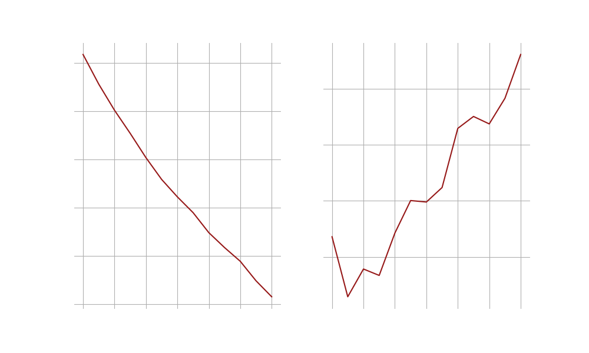

>adlucere@admin:~$ introduction.sh
Introduction
In the current age of easy access to humanity's greatest cinematic achievements when we like and how we like, we often wish to seek out the best of the best when looking for a way to spend an afternoon. But what really makes a movie a critical success? Is it an artistic X factor, the result of a director, the cast and the crew pouring their heart and soul into a project, or are there measurable factors that influence if we see a film as "high quality"? Is there a recipe for a critical darling? In this project we attempt to gain a deeper understanding of what makes a movie a critical success using a data-driven approach. Our analysis takes into account several factors and takes advantage of the large amounts of lexical data provided in the data set using feature extraction.
What makes a movie successful? Can we profile successful movies?
Come forth red carpet of analytical results...
>adlucere@admin:~$ cat introduction.log
Data Cleaning & Exploration
The dataset we work on is the CMU movie summary corpus dataset. We analyze the movies based on their average IMDb rating with respect to their release date, their availability in certain languages and countries, and the presence of the most prevalent genres. Additionally, we also take into account the main actor's gender proportion.
>adlucere@admin:~$ data_preprocessing.sh
... CMU meta data merging on movie. Process feature encoding ...
... Take most representative occurrences language, country genre ...
... Merge resulting dataset with imdb score ...
... Generate final dataset ...
Done !
>adlucere@admin:~$ cat exploratory_analysis.log
Exploratory Visualizations
Lets take a look at the processed data:

It is evident from the genre proportions that half of the films have dramatic settings, a third of them are comedies, and a further third are dramas and romantic films, respectively. Lower percentages of movies are found in the other genres, with Silent Films having the lowest movie proportional.

The distribution of languages in the movies as shown demonstrates that English is used in more than 70% of the movies, followed by Hindi and French. Regarding the others, it appears that local movies are the only ones that use these languages.

The majority of our films are produced in the United States, followed by a similar number of films in India and the United Kingdom, with fewer films being produced in Japan.

According to the results, the release date for each movie is essentially the same and hasn't changed at all in terms of exponential scale. On the other hand, we see that the numVoters has a wider range of values among the films, and there are some films that may be more well-known that have more voters referred to in the plot as outliers.Regarding the gender distribution across movies, we observe a consistent pattern with a mean of 50% equality; nevertheless, one film that features solely female actors stands out.We also have a normal distribution for the ratings, but this time there are more outliers with lower ratings on a log scale.
Now what about plot summaries..?
>adlucere@admin:~$ nlp_processing_pipeline.sh
NLP preprocessing pipeline
... performing stopword filtering ...
... lemmatization and punctuation removal ...
... starting word cloud visualization ...
>adlucere@admin:~$ cat latent_dirchlet_allocation_analysis.log
Latent Dirichlet Allocation
After the preprocessing phase on plot summaries, our approach was to include bigrams in the dictionary of our corpus to train a LDA model in order to find the topic distributions over the movie plot summaries. We used the coherence score to compare the models in order to fine-tune the topic parameter for the LDA technique, and in the end we chose the model with the lowest score when the curve will exactly have an upward slope. As the most common words associated with a topic are often difficult to interpret, we also extract a list of "prototype" movies for each topic, namely the top five weighted probability movies on each topic based on the movie-topic matrix distribution. We use pyLDAvis for interactive visualization.
So what is behind the LDA model findigs? What does this generated topics tell us?
Topic 1: Romantic comedy-dramas with a twist
We easily discovered some common threads between the prototypes for each topic. For topic 1, the prototypes have a great variety of release dates and localizations and are often romantic movies with a combination of comedy and drama elements. Additionally, they seem to have surprising elements, involving sensitive topics such as abortion after an accidental teen pregnancy or surreal elements, such as a movie character begging his writer for a companion. Because of this we choose the label Romantic comedy-dramas with a twist for this topic. Below are some of the most representative movies.

Topic 2: International historical movies
Continuing the above logic, the topic 2 prototypes are historical movies, generally set during events of upheaval and adversity, such as wars or terrorist hijackings. The most weighted tokens findings from LDA are the 'kill' ,'soldier','army','war'. Despite that fact, the prototypes do not seem to contain mainstream Hollywood American war movies. We therefore assign the label International historical movie to this category. Below are some of the most representative movies.

Topic 3: Low-budget action movies
Regarding topic 3, there wasn't a single exemplary approach to describe the prototype movies because there were contextual variations in both the weighted tokens and the summaries. The probability from the LDA model captures that the prototypical movies for this category have a 69% maximum chance of being about this subject, meaning that they cannot fully depict the context of the topic. However, a common thread in the prototypical movies seems to be violence and the presence of crime, cowboys, or the police as a central theme. Additionally, most of the prototypes are B-movies or independently produced. In light of this, we chose the label Low-Budget Action Movies for this topic.

Topic 4: Classical American cartoons
The most prevalent words in Topic 4's LDA outputs, as you can observe from the interactive plot, are seemingly meaningless words and a lot of names. However, a closer look at the prototypes themselves reveals that they are all Warner Brothers cartoons from the 1960s, so we chose the label Classical American Cartoons.

>adlucere@admin:~$ cat factor_analysis.log
Factor Analysis
We are able to make three significant separations of the movies based on plot summaries depending on whether they “belong” to one of 3 computed categories named factors. Each movie can only be assigned to one of them.
Will this separation be useful to distinguish between successful and unsuccessful movies?
Now that we have three different groups of movies, let's see how different they are from each other. And more importantly, if they give us any important insight on our objective, average imdb rating score.

T-tests are made on mean proportions for our categorical variables and means for the numeric variables. We deem significatively different those features whose t-tests p values are below the corrected significance 0.00041. It can be observed that this factor assignment yields significant differences between the groups, hence, we can consider them different. However, we observe that even though they may be a meaningful representation of the plot summaries, they do not have clear differences in their average rating.
They do not provide information for our end goal: profiling success in movies.
What about plot summaries then?
We executed two different transformations on the plot summaries and got meaningful representations of them. These representations or encodings are included in the following analysis, and should be taken into account when defining the characteristics that make a movie successful (high IMDb rating).
Feature |
P value |
|---|---|
united_states_of_america |
4.371e-95 |
Drama |
1.031e-91 |
english_language |
1.754e-85 |
Horror |
5.943e-72 |
india |
3.866e-70 |
World_cinema |
1.441e-66 |
Short_Film |
9.942e-53 |
topic_3 |
3.263e-50 |
Documentary |
9.457e-47 |
Action |
1.920e-28 |
>adlucere@admin:~$ cat separation_by_cluster_test.log
Test Result:FAILURE
